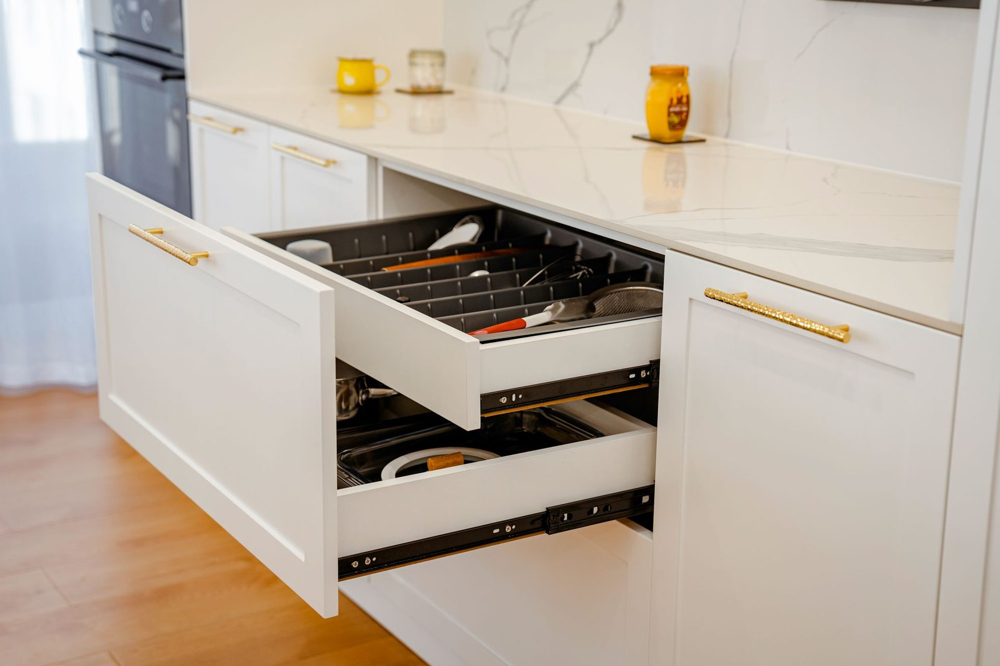
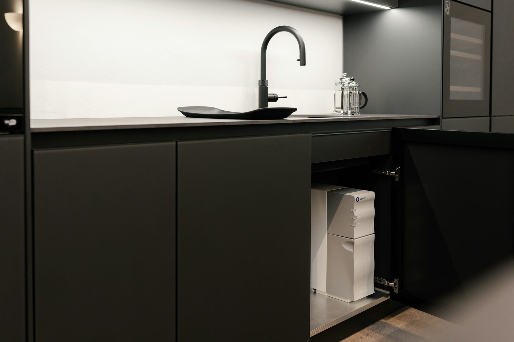

$580 – $780
Pull-down overheads
Brings the top shelf down to where you can actually reach it. No stepstool, no forgotten back row.
Needs an overhead at least 600mm wide and 800mm tall.
Soft-close is the standard. Motion is the option. Pull-down overheads, blind-corner pull-outs and lift systems — drawn into your layout at design stage, not bolted on afterwards.

The options
Each one is priced individually and itemised on your quote. The note under each says where it fits — and where it does not, because a pull-out that will not fit your corner is worth knowing about before you pay for it.
$580 – $780
Brings the top shelf down to where you can actually reach it. No stepstool, no forgotten back row.
Needs an overhead at least 600mm wide and 800mm tall.
$620 – $950
The dead corner every kitchen wastes, turned into two full-depth trays that swing out with the door.
Needs a corner cabinet of at least 900mm.
$240 – $380
Wet dishes drip into the sink and dry behind a closed door. Nothing sits on the benchtop.
Needs an overhead directly above the sink, 600mm or wider.
$420 – $680
Two rotating shelves that bring the whole corner to the door, rather than you climbing into it.
L-shaped corners only, 900mm minimum.
$180 – $280 each
A drawer inside a drawer. Doubles what a deep pot drawer holds without adding a single cabinet.
Any drawer 450mm deep or more.
$380 – $560
Two or three sorted bins on full-extension runners, behind a door, off the floor.
Needs a 450mm or 600mm base cabinet.
$890 – $1,450
Five shelves that come to you at once, so nothing lives permanently at the back.
Needs a 450mm or 600mm tall unit, full height.
$1,200 – $2,400 per run
Handleless doors and drawers that open at a touch and close themselves. The quiet luxury option.
Needs power to the cabinet run. Specify before manufacture.
Prices are fitted, added to a Bilt & Co kitchen, and include the hardware and the cabinet modifications each option needs. Retrofitting into an existing kitchen is quoted separately.
What you already get
Before you add anything, every Bilt & Co kitchen already includes the hardware most companies charge extra for.
Frequently asked
If your question is not here, call the studio. We would rather talk it through than have you guess.
Ask us directly →Soft-close hinges and runners are standard on every Bilt & Co kitchen at no extra cost. Everything on this page is a paid option, priced individually and itemised on your quote so you can see exactly what each one adds.
Some can, most should not be. Pull-downs, carousels and pantry pull-outs depend on the cabinet being built to suit — width, internal clearance and in some cases power. Retrofitting means replacing the cabinet. Decide these at design stage and they cost a fraction of what they cost afterwards.
The blind-corner pull-out, almost every time. It is the only option here that creates storage you currently do not have, rather than making existing storage easier to reach. Every kitchen with an L-shaped corner is wasting roughly half a cabinet.
The runners, hinges and motion systems are Blum, which carries a lifetime mechanical warranty. Some specialist units — carousels and pull-down shelves in particular — come from other specialist manufacturers where they make a better product. We will tell you which is which on your quote.
In their words
“For what we paid compared to what similar kitchens were costing elsewhere, we’re extremely happy with it.”
“Could not be happier with our kitchen. The funny thing is, pretty much everyone who’s come over since we installed it has asked who did our kitchen and assumed we spent a lot more than we actually did.”
“Once we saw it in person, it was a pretty easy decision. It looked even better than we expected.”

Specify it early
Most of these depend on the cabinet being built to suit. Decided at design stage they cost a fraction of what they cost once the kitchen is in. Bring your layout and we will tell you which are worth it for your room.